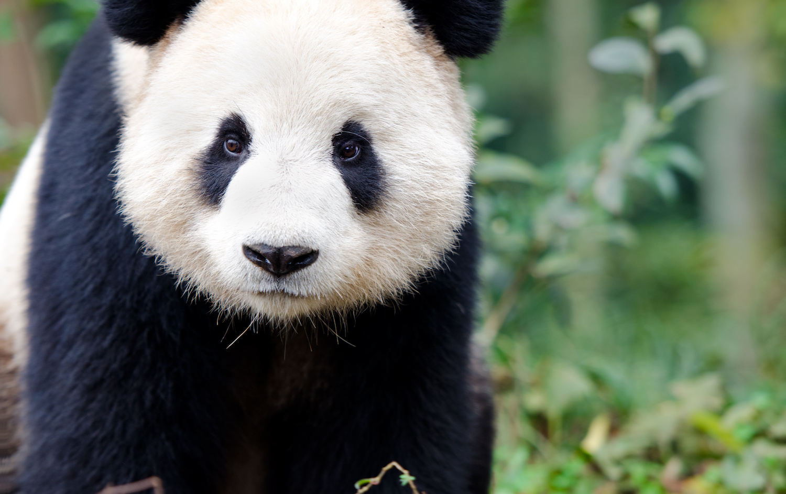

Endangered Species
Eagle
 The bald eagle is touted as the Endangered Species Act's crowning jewel. According to the U.S. Fish and Wildlife Service, the bald eagle nearly went extinct forty years ago.
"Habitat destruction and degradation, illegal shooting, and contaminated food sources decimated the eagle population," says U.S. Fish and Wildlife.
The bald eagle is touted as the Endangered Species Act's crowning jewel. According to the U.S. Fish and Wildlife Service, the bald eagle nearly went extinct forty years ago.
"Habitat destruction and degradation, illegal shooting, and contaminated food sources decimated the eagle population," says U.S. Fish and Wildlife.
Panda
China, which is home to the remaining wild population of fewer than 2,500 individuals, has since the late 1980s instituted more stringent habitat protections and poaching has all but ceased. Their status is still tenuous, though. Their range is fragmented and they are still subject to disease, occasional predation, and starvation when large swathes of the bamboo on which they feed completes its life cycle and dies.
Elephant
 The IUCN’s best guess on the current population of Asian elephants, which inhabit 13 countries, is around 40,000–50,000. That number may be far lower; some regions inhabited by the lumbering pachyderms are inaccessible due to the terrain or to political volatility. Over 50% of the population is concentrated in India. The burgeoning human population there—and elsewhere in Asia—creates conflicts for space and resources. And while the tusks of Asian elephants are much smaller than those of their African counterparts, the Asian species is still poached for its ivory, meat, and skin.
The IUCN’s best guess on the current population of Asian elephants, which inhabit 13 countries, is around 40,000–50,000. That number may be far lower; some regions inhabited by the lumbering pachyderms are inaccessible due to the terrain or to political volatility. Over 50% of the population is concentrated in India. The burgeoning human population there—and elsewhere in Asia—creates conflicts for space and resources. And while the tusks of Asian elephants are much smaller than those of their African counterparts, the Asian species is still poached for its ivory, meat, and skin.
Bear
 Grizzly bears are an iconic North American mammal, found in Alaska, parts of Canada, and portions of the northwest US. They are a subspecies of brown bear , distinguished by their color, a muscular hump on their back, and the length of their claws. These magnificent creatures define many national parks in the US, partially because of their status as “threatened” under the Endangered Species Act.
Grizzly bears are an iconic North American mammal, found in Alaska, parts of Canada, and portions of the northwest US. They are a subspecies of brown bear , distinguished by their color, a muscular hump on their back, and the length of their claws. These magnificent creatures define many national parks in the US, partially because of their status as “threatened” under the Endangered Species Act.